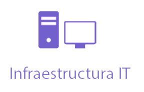

INFRAESTRUCTURA IT
Nuestra planificación e implementación de infraestructura incluye el almacenamiento en la nube, la recuperación de desastres y el monitoreo de capacidad y gestión de los sistemas totales, usted confía para gestionar su entorno de computación en un nivel de servicio que satisface sus necesidades. Entendemos que su infraestructura IT. es la crítica para el éxito de su negocio, y le ayudamos a dar el próximo paso.
Diseñamos, Implementamos la infraestructura adecuada para su empresa BLACKTECH CONSULTING SRL le ayuda a aprovechar tecnología de última generación para un alto retorno de su inversión. Analizamos todos los aspectos de su infraestructura el procesamiento de la capacidad, las redes, las capacidades de seguridad, la interconectividad y los sistemas compartidos. Construimos Infraestructuras que alcanza resultados:
Productividad incrementada. Sus empleados son más productivos cuando los sistemas son rápidos están disponibles. La mejora de los niveles de servicio. Su infraestructura está en funcionamiento, lo que permite la continuidad del negocio y el servicio ininterrumpido. Mejor y más rentable un diseño efectivo, lo que requiere un servicio mínimo. Mayor seguridad. Proteja su propiedad intelectual y privacidad. Mejora de la escalabilidad. Su nuevo sistema crece con su empresa. Con Mayor flexibilidad, Cambia o agregar a sus sistemas con poco o ningún tiempo de inactividad.